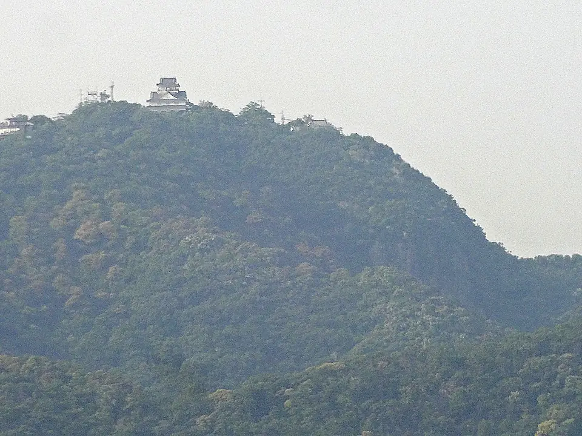

- 區間
- 岐阜羽島 → 米原
- 座位側
- E座・往新大阪方向右側，往東京方向左側
- 通過時間
- 希望號離開東京後約103分鐘
- 可見時間
- 幾秒鐘希望號的概略時間；會隨車速、天氣與遮蔽物而變動。
背後的故事
岐阜城是什麼，為何有名？
岐阜城位於長良川旁陡起的金華山（舊稱稻葉山）山頂。起源可追溯至鎌倉時代的堡壘；戰國時代，被稱為「美濃之蝮」的齋藤道三將它發展為主要據點。1567年，鄰近尾張的織田信長攻下稻葉山城，把城鎮改名「岐阜」，作為統一全國的基地。他此時開始使用的「天下布武」印章，是日本史上極具代表性的符號。城在江戶初期被廢止，但金華山與山頂天守的輪廓，仍是現代城市的地標。
從東京前往新大阪時，接近岐阜羽島→米原區間就開始留意右側車窗（E座）。往東京時順序相反，同樣的E座在左側。
觀看重點
今天的天守，以及如何找到它
目前天守於1956年以鋼筋混凝土重建，內有小型博物館與展望台。它不是忠實復原，但金華山頂的位置長久塑造了岐阜城的印象。山腳岐阜公園有纜車通往山頂，可眺望濃尾平原、木曾三川，甚至伊吹山。
新幹線接近岐阜羽島時，從E座側往北尋找金華山。從大阪方向來，最佳時機在到站前一至兩分鐘。山頂天守很小，容易混入建築、霧氣與季節性的空氣中。先找低矮、近似三角形的山，再找頂端小白點。陰天、霧霾或黃沙天，即使看得到山，也不一定辨認得出天守。
從東海道本線、其他JR在來線或名鐵各務原線，城看起來更明顯。本頁也附上較近方向的參考照片。在新幹線上，它小得多：尋找橋與城市後方點狀的天守。若想近看岐阜城，值得安排轉乘造訪。
參考：從較近的在來線方向看岐阜城
岐阜城距新幹線很遠，只像一個小點。下方照片是從JR在來線方向較近的參考視角，幫助你辨認應尋找哪座山與天守。

地圖
位置一覽
開啟地圖切換景點位置與新幹線觀賞位置。
你的車窗導覽
別錯過窗外風景
動態風景
動態中的岐阜城
看看金華山頂的小天守如何掠過。影片中的車內廣播是迪士尼新幹線版本。
這些影片使用X與YouTube官方嵌入播放器。
延伸閱讀
參考資料
官方指引與車窗風景紀錄。